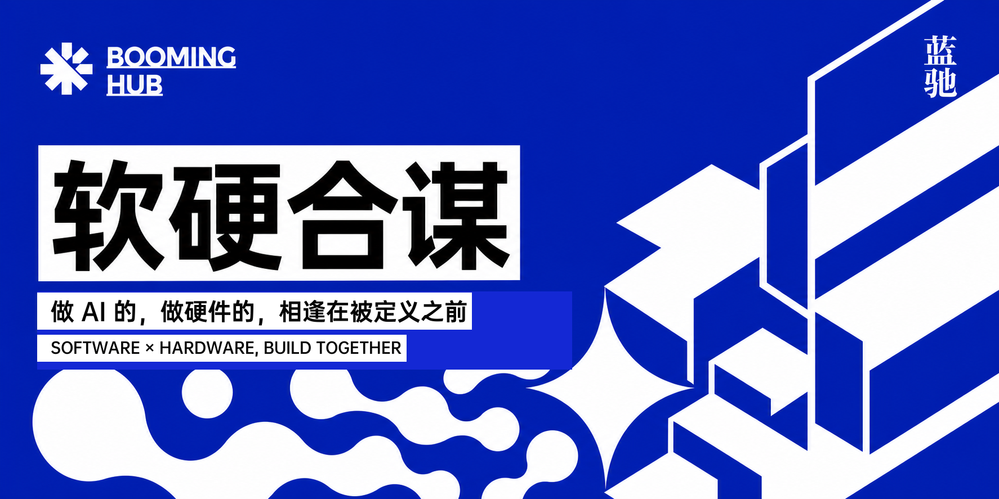
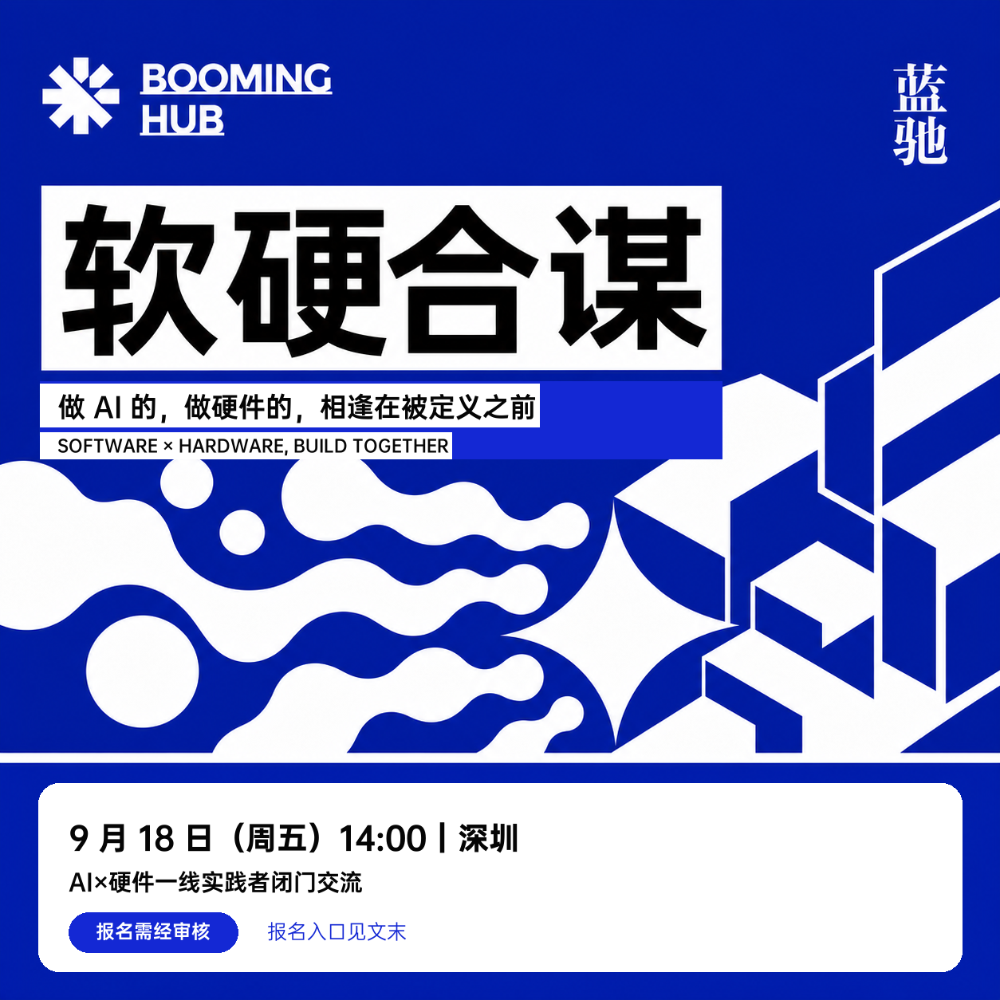

做 AI 的，做硬件的，来一次软硬合谋｜Booming Hub 深圳招募

2024 年 12 月，第一场 Booming Hub 在深圳落地。
飞行相机、智能割草机、AI 眼镜、AI 玩具……8 位创业者和行业观察者，与 130 多位参与者一起讨论：
AI，正在怎样重新定义硬件？

9 月 18 日，Booming Hub 再回深圳。
两年后，我们关心的不再只是已经出现了哪些 AI 硬件，而是：下一款产品被定义之前，哪些人应该先坐到一起？
上一次，我们把来自创业者的非共识判断带到台上。这一次，我们想把时间交给参与者——发起一场「软硬合谋」。
我们不想等模型做好了再找硬件载体，也不想等硬件产品定型后再把 AI 嵌入其中。
不是每一种 AI 能力，都需要一种新的硬件形态；也不是每一款硬件，加上 AI 就会成为一款新产品。
你也许已经验证了一项 AI 能力，却还没有找到最适合它的产品形态：它应该进入眼镜、耳机或机器人，还是根本不需要独立的硬件载体？
你也许已经把一款产品从定义带到量产，却仍然要问：加入 AI 以后，用户究竟能获得什么过去没有的体验？这样的体验，值得团队为它付出更多成本、功耗和研发周期吗？
这些问题，很难由 AI 或硬件中的任何一侧独立回答。
我们想和两侧真正做过事的人一起判断：这个需求是否成立，下一步最该验证什么，以及彼此有没有继续合作的可能。
不泛谈趋势，我们把真实问题摆上桌
这一次，我们想把更多时间交给参与者。现场将围绕不同产品方向分桌交流，从真实问题与实践经验出发，共同交换判断。
这个下午，你可以期待：
- 来自一线的实践与判断：从正在发生的产品实践与行业变化出发，看见 AI×硬件的新机会与新问题。
- 与软硬两侧的一线实践者深度交流：遇见来自模型、产品、设计、工程、量产与供应链等不同环节的一线实践者。
- 探讨真实问题：围绕参与者正在关注和推进的产品方向，讨论真实需求、产品场景与实践难题。
- 让值得继续的连接自然发生：认识判断相近、能力互补的人，让现场交流有机会延续为下一次验证或合作。

我们想邀请谁？
这次 Booming Hub 深圳场，我们希望邀请来自 AI 与硬件两侧的一线实践者：
- 一类真正做过模型、算法、Agent、多模态交互、AI 产品或软件工程；
- 另一类做过产品定义、工业设计、工程开发、NPI、量产、供应链或全球交付。
本次活动尤其关注影像、可穿戴、健康运动、娱乐陪伴等产品方向，也欢迎 Maker，以及正在探索尚未被定义的新产品形态的实践者。
你未必已经创业，也未必已经拥有一个完整项目。
但也许你已经不止一次想过：
如果由我来定义一款产品，它会不会不一样？
你可能已经在模型、产品、设计、工程或供应链一线积累了关键能力，正在寻找一个值得投入的方向，也希望遇见能够补上产品闭环中另一块拼图的人。
如果你想把已有的能力变成一款真正的产品，把脑海中的判断推进到下一次验证，甚至找到可以一起从 0 到 1 的伙伴——
欢迎带着擅长的能力、需要的资源以及希望交流的话题，申请加入这次 Booming Hub。
💡 Booming Hub 是什么？
「不鸣 Booming」是蓝驰发起的创业者生态品牌，致力于帮助创业者从不鸣走向 Booming。
Hub 在局域网中的意思是“集线器”，它放大所有接收到的数字信号，再将其传输至与之相连的所有节点。
在我们看来，每一个创业者的 idea，都是一段待放大、转译、联通的珍贵信号。所以我们搭建了「Booming Hub」作为蓝驰与所有科技创投人聚会的场域。从深圳到香港、硅谷、东京，我们打破文化与地域的限制，让无数关于科技的 idea 在这里自由汇聚、碰撞出新的灵感。
📍活动信息
活动主题｜软硬合谋：寻找 AI×硬件的真需求与真场景
活动日期｜9 月 18 日（周五）
活动时间｜14:00
活动地点｜深圳，具体场地待确认
活动规模｜30 余人
参与方式｜报名需经审核
如果你有一项擅长的能力、一个正在思考的产品方向，或者一个希望与软硬件伙伴共同拆解的真实问题，欢迎提交申请。
由于现场规模有限，我们将结合申请者的实践经历、专业能力、关注方向与参与诉求进行筛选和分桌。
👇扫码或点击“阅读原文”提交申请，期待与你在深圳见面。